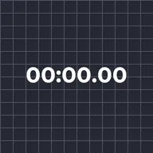

Tijdcode

Vervangt de tekst van een laag door een lopende klok met de laag- of projecttijd. Starten bij en een negatieve Snelheid maken er een aftelling van.
Instellingen
| Instelling | Type | Bereik | Standaard |
|---|---|---|---|
| Notatie | Keuze | HH:MM:SS:FF, HH:MM:SS, MM:SS, MM:SS.hh, SS.hh, Frames, MM:SS:FF | HH:MM:SS:FF |
| Tijd | Keuze | Laag, Project | Laag |
| Starten bij | Getal | -360000 s tot 360000 s | 0 s |
| Snelheid | Getal | -100 tot 100 | 1 |